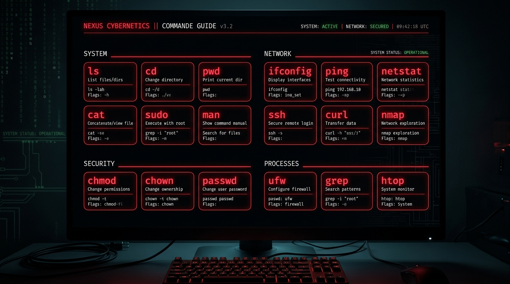
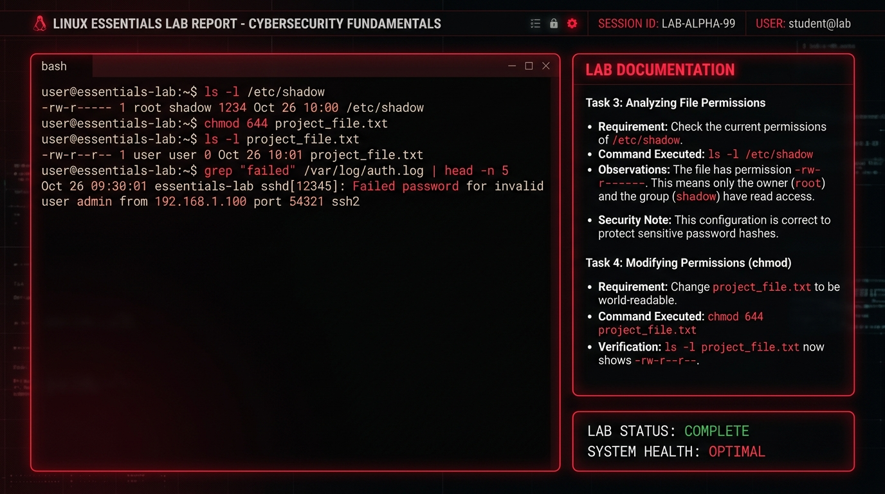
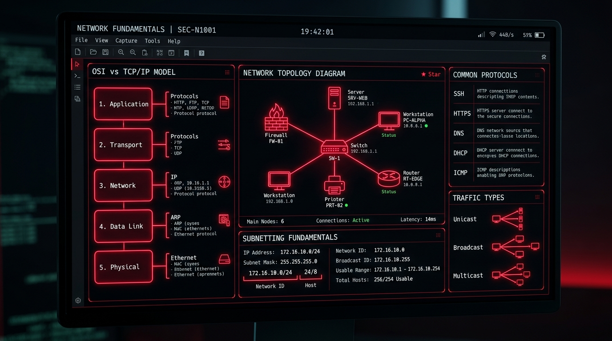
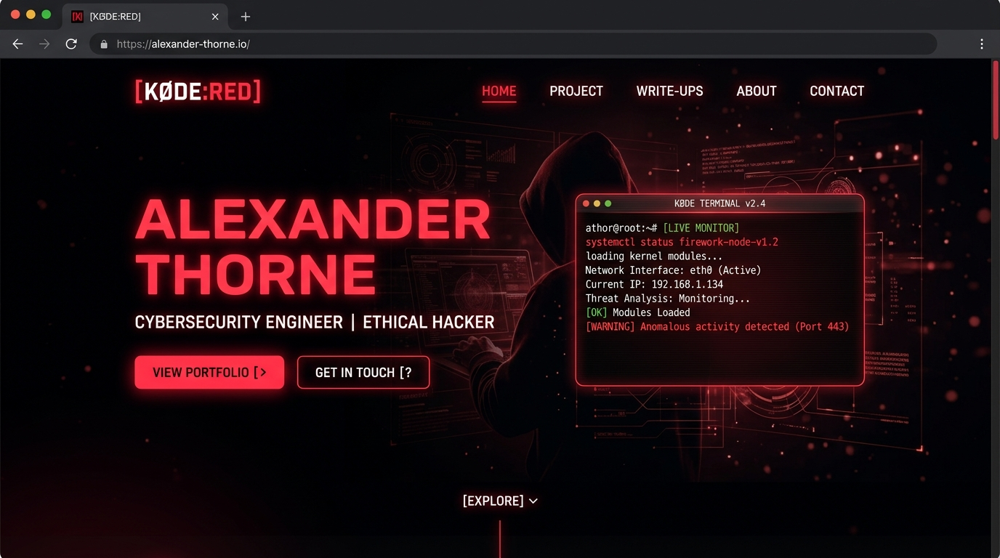

Linux Essentials
کار با خط فرمان، فایلسیستم، پردازهها و دستورات پایه لینوکس.
Linux • Networking • Cybersecurity
از لینوکس تا تست نفوذ؛ در حال ساخت مهارتهای واقعی، انجام پروژههای عملی و مستندسازی مسیر یادگیری در گیتهاب.
مسیر یادگیری من از خط فرمان تا امنیت سایبری.
من مارکو هستم، ۱۷ ساله و علاقهمند به لینوکس، شبکه و امنیت سایبری. در حال ساختن پایههای فنی خود از طریق یادگیری عملی، مستندسازی پروژهها و مطالعه مفاهیم امنیتی هستم.
تمرکز فعلی من روی Linux Essentials، مبانی شبکه، Git/GitHub و مسیر ورود به دنیای تست نفوذ است. خودم را متخصص نمیدانم؛ اما هر روز در حال تمرین، ساخت پروژه و بهتر کردن مهارتهایم هستم.
پایههایی که در حال ساختن و تقویت آنها هستم.
کار با خط فرمان، فایلسیستم، پردازهها و دستورات پایه لینوکس.
IP، DNS، Gateway، Router، TCP/UDP و عیبیابی پایه شبکه.
در حال یادگیری مفاهیم دفاعی، تهاجمی و اصول اولیه امنیت.
مستندسازی مسیر یادگیری و مدیریت پروژهها در گیتهاب.
ساختاردهی صفحات وب با نشانهگذاری تمیز و قابل فهم.
طراحی واکنشگرا، افکتهای بصری و انیمیشنهای مدرن.
افزودن تعامل، انیمیشن و رفتارهای پویا به صفحات وب.
تحلیل مسئله، شکستن آن به بخشهای کوچک و دیباگ مرحلهای.
کارهای عملی و یادگیری مستندشده.

یک مرجع مستند از دستورات Linux Essentials همراه با توضیح و مثال برای مسیر یادگیری لینوکس.
مشاهده مخزن
گزارش تمرینی از کار با دستورات پایه لینوکس، مدیریت فایل، متغیرهای محیطی و ابزارهای راهنما.
مشاهده مخزن
یادداشتهای در حال تکمیل درباره IP، DNS، Router، Gateway، DHCP و سناریوهای عیبیابی شبکه.
در حال تکمیل
یک پورتفولیوی شخصی با تم قرمز/مشکی، انیمیشن، طراحی واکنشگرا و تمرکز روی مسیر امنیت سایبری.
مشاهده مخزنمسیر از مبانی لینوکس تا ورود حرفهای به امنیت.
تسلط بر دستورات پایه، فایلسیستم و محیط ترمینال.
یادگیری IP، DNS، Gateway، Router، TCP/UDP و سناریوهای عملی.
ثبت مسیر یادگیری، ساخت ریپو و مستندسازی حرفهای پروژهها.
خودکارسازی کارهای تکراری و ساخت ابزارهای ساده خط فرمان.
شناخت آسیبپذیریهای مهم وب و مفاهیم امنیت برنامههای تحت وب.
تمرین مهارتها در آزمایشگاهها و چالشهای امنیتی قانونی.
آمادهسازی برای مدیریت لینوکس در سطح حرفهایتر.
یادگیری متدولوژی، شناسایی، تحلیل آسیبپذیری و گزارشنویسی.
هویت فنی من با نام @senatur و مستندسازی مسیر یادگیری.
Public Learning Journey & Technical Notes
در حال ساخت و مستندسازیبرای دیدن پروژهها و مسیر یادگیری من.